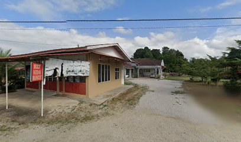

MY EXPERIENCE

After I finished my SPM on 2020, I continued working as a cashier at convenience store near my house while waiting for the SPM results to gain work experience and to get some extra money before futher my studies. As a cashier , i take a responsibility to manage transactions with customers using cash register, scanning goods and ensuring pricing is accurate also collecting payments whether in cash or credit. I really enjoy my working time that filled with both happy and sad memories.